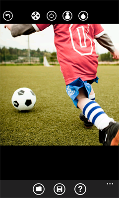

для того, чтобы сделать участок изображения черно-белым
для того, чтобы сделать участок изображения черно-белымMagicPhotos - приложение для устройств на базе Windows Phone, которое позволяет быстро и просто обработать фото с применением ряда эффектов, давая возможность оставить выбранные детали изображения в нетронутом виде, что привлекает внимание зрителя к выбранным автором участкам фотографии.
При возникновении любых вопросов по использованию этого приложения вы можете связаться с разработчиком через этот Web-сайт: http://magicphotos.sourceforge.net/.
Режим обесцвечивания позволяет придать фотографии броский вид, давая возможность выделить цветом выбранные детали на черно-белом изображении, что привлекает внимание зрителя к цветным участкам. Для редактирования изображения в этом режиме используйте следующие кнопки:
для прокрутки и масштабирования изображения
для того, чтобы вернуть участку изображения исходный цвет
для того, чтобы сделать участок изображения черно-белым
Режим эскиза позволяет превратить ваши фотографии в эскизы, давая возможность оставить выбранные детали изображения в нетронутом виде. Вы будете иметь возможность управлять процессом создания эскиза. Для редактирования изображения в этом режиме используйте следующие кнопки:
для прокрутки и масштабирования изображения
для того, чтобы вернуть участку изображения исходный вид
для того, чтобы превратить участок изображения в эскиз
Режим перекрашивания позволяет раскрасить ваши фотографии в произвольные цвета для придания им свежего, нестандартного вида. Для редактирования изображения в этом режиме используйте следующие кнопки:
для прокрутки и масштабирования изображения
для того, чтобы вернуть участку изображения исходный цвет
для того, чтобы раскрасить участок изображения выбранным цветом
для выбора цвета из палитры цветов
Режим ретуширования позволяет удалить небольшие дефекты и нежелательные объекты с ваших фотографий с помощью техники клонирования и размытия участков изображения. Советы по удалению нежелательных участков с фотографий:
1. Откройте фотографию для редактирования.

2. Нажмите кнопку и затем нажмите на участок изображения, выбранный в качестве образца для клонирования. Этот участок затем заменит собой удаляемый фрагмент фотографии.

3. Нажмите кнопку , а затем нажмите и аккуратно проведите пальцем по участку фотографии, который вы хотите удалить. Обратите внимание, что перекрестие, обозначающее исходную точку клонирования, также будет двигаться, следуя движениям вашего пальца.

4. Повторяйте шаги 2 и 3 до тех пор, пока нежелательный участок не будет полностью удален. Внимательно выбирайте участки-образцы для создания ровной и естественно выглядящей поверхности на месте удаляемого участка. При необходимости изменяйте масштаб изображения и следите за изменениями, происходящими на закрытом вашим пальцем участке, с помощью вспомогательного экрана-лупы. Используйте кнопку  для размытия чересчур резких границ между участками.
для размытия чересчур резких границ между участками.

5. Сохраните получившееся изображение в галерею на вашем устройстве.